Esta guía recorre, capturas en mano, el flujo completo descrito en 1.2: desde crear un proyecto en Quartus Prime hasta dejar un sistema Nios II completo, listo para Generate HDL, en Platform Designer (Qsys), y de ahí hasta la FPGA programada. Tiene tres partes: los 8 pasos iniciales (capturas de pantalla, del asistente de proyecto a la primera vista de Platform Designer); después, el ensamblado completo del sistema — componente por componente, con los errores reales que aparecieron en el camino — hasta descargar y correr el primer programa; y por último la configuración del JTAG UART, la compilación en Quartus, el Pin Planner y la programación final, donde aparece también el HPS (SOCVHPS) del Cyclone V. Cada paso explica no solo qué botón se presiona, sino por qué esa decisión importa para el resto del laboratorio.
Gpio" sobre el dispositivo
Cyclone V (E/GX/GT/SX/SE/ST), 5CSEBA6U23I7 — confirmado como el hardware
correcto para esta práctica. Es una familia distinta a la Cyclone IV E
EP4CE115F29C7 de la DE2-115 que aún describen
guia.tex/notas.tex de esta semana; esos dos archivos quedan pendientes de
actualizarse para reflejar 5CSEBA6U23I7 como la tarjeta real (no se tocó en esta guía).
1 Directorio, nombre y entidad de nivel superior del proyecto
El New Project Wizard de Quartus Prime (File → New Project Wizard) pide tres datos
antes de crear nada: el directorio de trabajo, el nombre del proyecto
y la entidad de nivel superior (Top-Level Entity). En la captura, el
proyecto se llama Gpio y la entidad de nivel superior lleva el mismo nombre — Quartus
obliga a que exista un archivo de diseño cuya entidad se llame exactamente igual al nombre puesto
aquí.
- Ruta sin espacios: el sintetizador genera decenas de archivos temporales
(netlists, bases de datos de ruteo, reportes de timing). Herramientas basadas en scripts Tcl
pueden interpretar un espacio en la ruta como separador de argumentos y fallar de forma críptica
durante la síntesis — por eso conviene una ruta como
C:\FPGA\Practica1y noC:\Mis Proyectos\Practica 1. - Entidad de nivel superior: en VHDL/Verilog el diseño es estrictamente jerárquico. Esta entidad define las interfaces físicas (pines) que se conectarán al chip; Quartus construye el árbol de dependencias ("Elaboration") descendiendo desde ella. Es, además, el mismo módulo donde más adelante se instanciará el sistema Nios II generado por Platform Designer (ver 1.2).
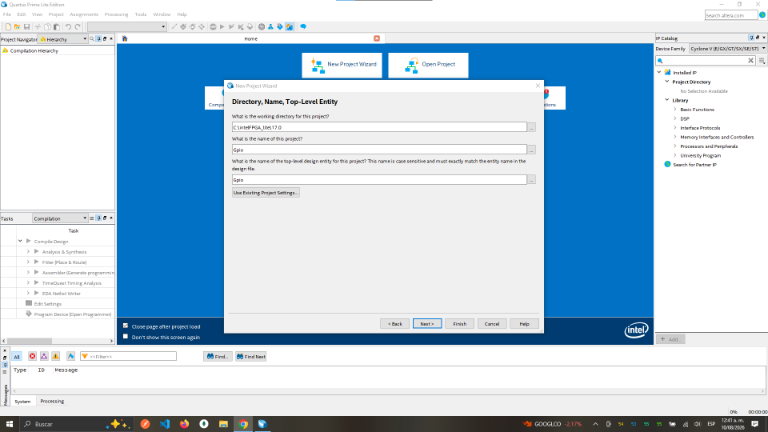
2 Tipo de proyecto: vacío vs. plantilla
La segunda página del asistente pregunta si el proyecto parte de cero (Empty project) o de una Project template preexistente. La captura muestra Empty project seleccionado.
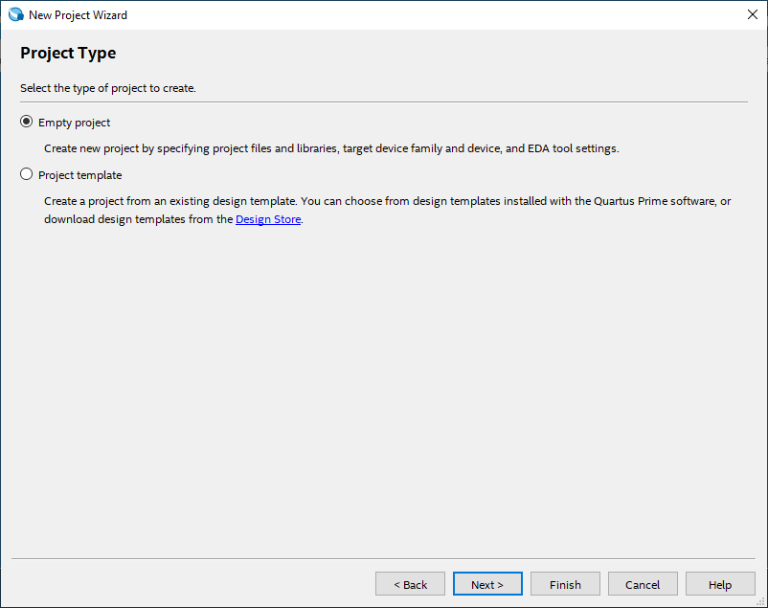
3 Selección del dispositivo físico (Target Device)
Aquí la abstracción del código se encuentra con el silicio real. La captura muestra la familia
Cyclone V (E/GX/GT/SX/SE/ST) y, dentro de la tabla de dispositivos disponibles, el
modelo 5CSEBA6U23I7 resaltado — con 41 910 ALMs, 314 E/S totales y grado de velocidad
I7.
- Capacidad lógica (ALMs): define cuántos Adaptive Logic Modules hay disponibles para mapear la lógica del diseño — incluido el núcleo Nios II que se agregará luego.
- E/S totales (GPIOs): limita cuántas señales físicas puede exponer el diseño; relevante para el proyecto "Gpio" de esta captura, que previsiblemente maneja pines de entrada/salida de propósito general.
- Grado de velocidad (Speed Grade, aquí "I7"): indica los retardos intrínsecos del silicio. El Timing Analysis de Quartus usa este dato para asegurar que los tiempos de establecimiento y retención (setup/hold) de los flip-flops se cumplan bajo el reloj del sistema, evitando metaestabilidad.
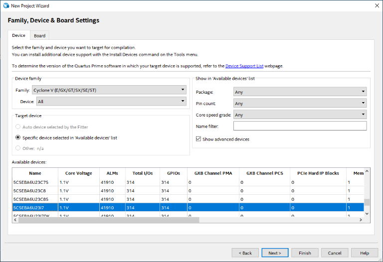
5CSEBA6U23I7 seleccionado en la tabla de dispositivos disponibles.4 El entorno principal de Quartus Prime
Con el proyecto ya creado, esta es la ventana principal: Project Navigator (panel izquierdo, pestaña Hierarchy) muestra el dispositivo objetivo y la jerarquía del diseño; el panel Tasks, abajo a la izquierda, expone el flujo de compilación completo.
- Analysis & Synthesis: analiza el HDL, optimiza la lógica booleana y mapea las ecuaciones a primitivas del dispositivo (LUTs, registros).
- Fitter (Place & Route): ubica físicamente esas primitivas en coordenadas de la matriz de la FPGA y enruta las interconexiones, resolviendo un problema de optimización NP-complejo para cumplir las restricciones de tiempo.
- Assembler: traduce el mapa físico resultante al archivo binario de
configuración (
.sof) que programa las celdas SRAM internas de la FPGA.
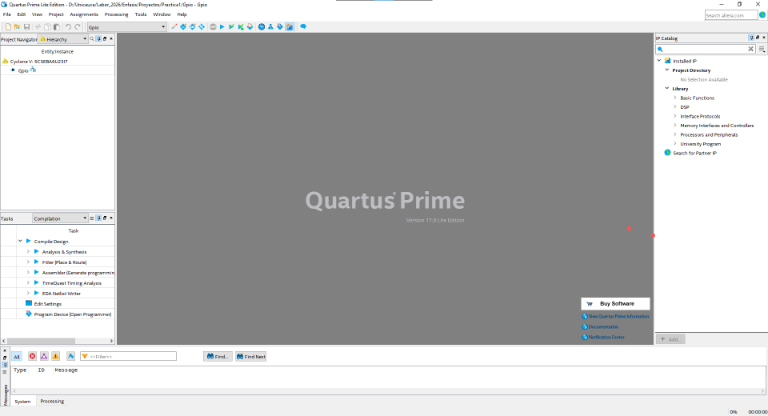
5 Creación de un nuevo archivo de diagrama de bloques (.bdf)
Desde File → New se abre este diálogo con las categorías de archivo disponibles. La captura muestra "Block Diagram/Schematic File" resaltado dentro de Design Files.
.bdf. En proyectos que integran un sistema Nios II, el BDF
suele ser justamente el archivo de nivel superior: los ingenieros escriben módulos
complejos en HDL (o los generan con Platform Designer), obtienen un símbolo gráfico a partir de ese
código, y luego interconectan visualmente esos símbolos en el lienzo del BDF. Esto mejora la
legibilidad del flujo de datos y de las señales de control entre subsistemas — es el mismo archivo
donde, en el flujo completo, se instanciará el sistema generado por
Platform Designer.
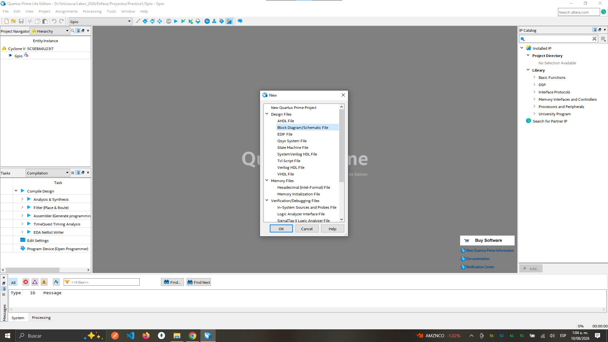
6 El lienzo del diagrama de bloques
El archivo Block1.bdf recién creado se abre como una superficie en blanco, con la barra
de herramientas de edición esquemática (selección, símbolo, herramientas de línea ortogonal, etc.)
en la parte superior del lienzo.
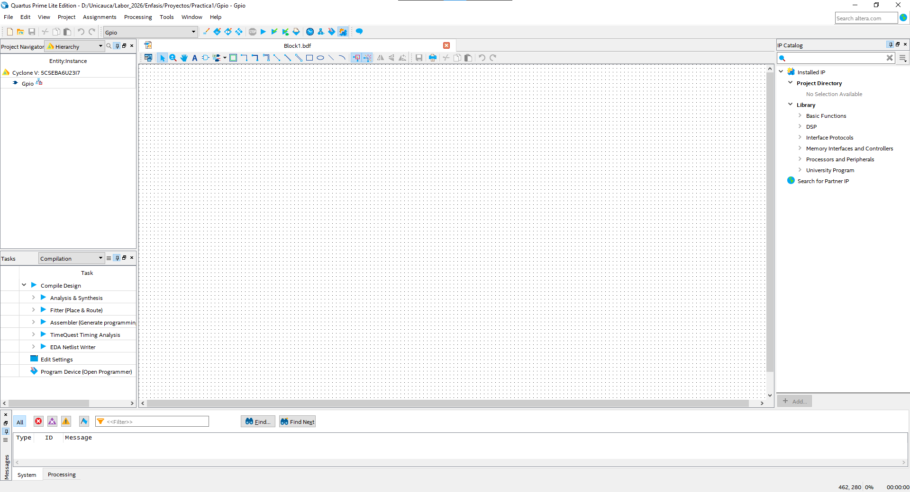
Block1.bdf, listo para instanciar y conectar símbolos.7 Del diseño de bajo nivel a la integración de sistema: menú Tools → Qsys
Cuando el diseño supera la lógica combinacional básica y requiere una arquitectura orientada a procesador, la captura esquemática por sí sola no basta. La captura muestra el menú Tools desplegado, con la opción Qsys resaltada — el nombre con el que Quartus 18.1 todavía identifica a Platform Designer.
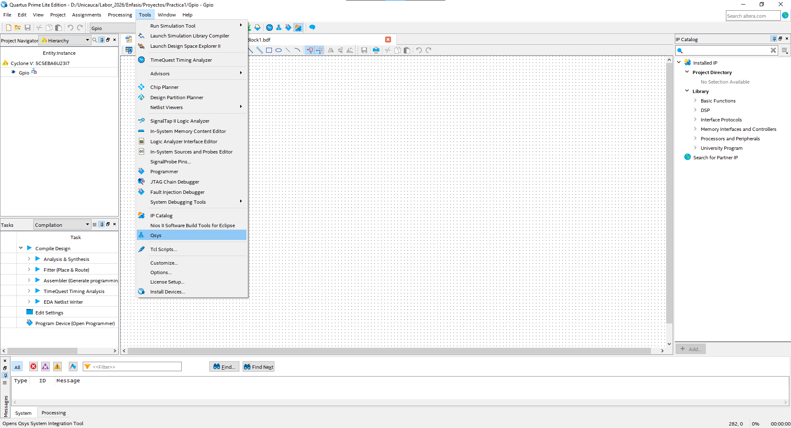
8 Primera vista de Platform Designer (Qsys)
La ventana de Qsys, recién abierta sobre un sistema todavía sin guardar (unsaved.qsys),
ya trae un componente por defecto: clk_0, una fuente de reloj con sus puertos
clk_in/clk_in_reset y sus salidas clk/reset
marcadas como exported (exportadas al top-level). La pestaña System Contents
está activa; junto a ella están Address Map e Interconnect Requirements.
A la izquierda, el IP Catalog lista las categorías de componentes disponibles
(Basic Functions, DSP, Interface Protocols, Memory Interfaces and Controllers, Processors and
Peripherals, entre otras) y, abajo, el panel Hierarchy refleja el árbol del sistema
en construcción (clk, reset, clk_0).
- El reloj se agrega primero, siempre: en diseño digital síncrono, la gestión
del árbol de reloj es el factor más crítico.
clk_0es el componente que distribuirá el clock y el reset sincronizado a todos los módulos maestros y esclavos que se añadan después — el núcleo Nios II Processor, la On-Chip Memory y la JTAG UART descritos en 1.1. - "Exported" tiene un significado preciso: marca que ese puerto del componente
interno queda expuesto como puerto del sistema completo, para poder conectarlo — fuera de
Platform Designer — a señales físicas reales en el
.bdfdel paso 6 (por ejemplo,clka un oscilador de la tarjeta yreseta un pulsador). - 0 Errors, 0 Warnings en la barra de estado inferior confirma que, hasta este punto, el sistema (aunque incompleto) es internamente consistente. Ese indicador es la señal para seguir agregando componentes con confianza, en vez de acumular errores hasta el final.
.bdf como un único
símbolo macro-componente, perfectamente interconectado por dentro.
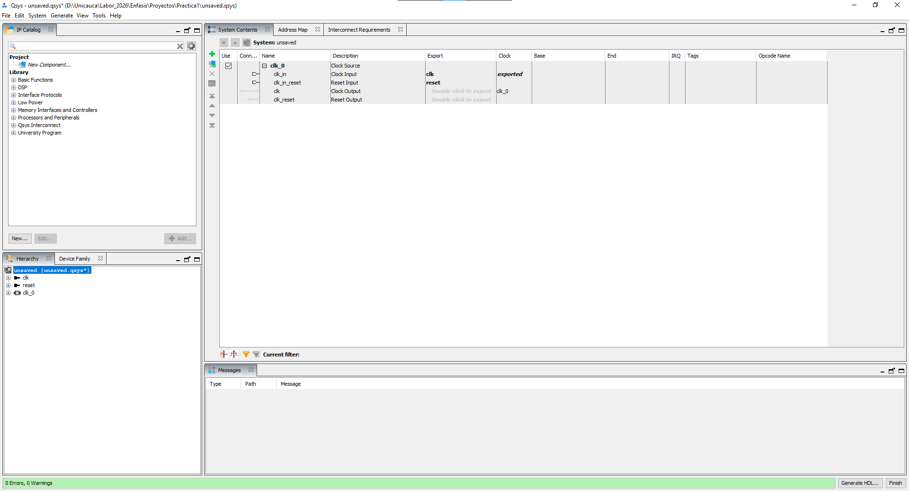
clk_0 por defecto, IP Catalog y jerarquía del sistema en construcción..bdf del paso 6, se compila en Quartus y se programa en la FPGA. La sección siguiente
desarrolla ese tramo completo, componente por componente y error por error, tal como se ensambló en
la práctica real.
Ensamblar el sistema en Platform Designer, paso a paso
Esta segunda parte de la guía retoma exactamente donde terminó el paso 8:
Platform Designer abierto con solo clk_0 en el sistema. Documenta, componente por
componente, cómo se llegó de ahí a un sistema Nios II completo y listo para Generate
HDL — incluidos los errores reales que aparecieron en el camino y por qué ciertos puertos
se dejan sin conectar a propósito.
┌─────────────────┐
│ clk_0 │
│ Clock Source │
└────────┬────────┘
│
┌────────┴────────┐
│ │
▼ ▼
┌───────────┐ ┌──────────────┐
│ micro │ │ memoria │
│ Nios II │◄──►│ On-Chip RAM │
└─────┬─────┘ └──────────────┘
│
┌─────▼─────┐
│ JTAG Debug│
└───────────┘
01_qsys_niosii_con_errores.png...06_generate_hdl.png) que no existían
en el proyecto. Se agregaron 3 capturas reales (img/paso9.png,
img/paso10.png, img/paso11.png) que cubren el estado inicial con
errores, los parámetros de memoria.s1 con el error de overlap, y los parámetros de
micro con Reset/Exception Vector — ya insertadas en los puntos correspondientes.
Una cuarta captura real, img/paso13.png (pestaña System Contents,
no Address Map, pero con las mismas columnas Base/End), llegó después como parte de
la sección de JTAG UART y programación y de hecho
muestra el sistema ya resuelto — 0 Errors, 1 Warning — así que cubre lo que
antes faltaba de la vista de direcciones limpia. Siguen sin existir en el proyecto capturas
dedicadas para: la tabla de configuración de memoria (ancho/tamaño) y la ventana de
Generate HDL. Se marca con (captura pendiente) el punto exacto donde
iría cada una.
| Componente | Función |
|---|---|
clk_0 | Generar el reloj del sistema |
micro | Procesador Nios II |
memoria | Memoria interna de la FPGA |
memoria.s1 | Interfaz Avalon Memory-Mapped de la memoria |
data_master | Acceso del procesador a datos/periféricos |
instruction_master | Acceso del procesador a instrucciones |
d_irq | Entrada de interrupciones |
custom_instruction_master | Interfaz para instrucciones personalizadas |
jtag_debug_module | Depuración mediante JTAG |
reset_n | Reset del procesador |
reset1 | Reset de la memoria |
La primera vista del sistema Gpio en Platform Designer, ya con clk_0,
nios2_qsys_0 (el núcleo Nios II, todavía con su nombre por defecto) y
onchip_memory2_0 (la memoria, ídem) agregados, muestra errores en la parte inferior:
Platform Designer comprueba que cada componente tenga sus señales obligatorias conectadas, y que
el procesador tenga definida su memoria de programa, su memoria de excepciones y sus periféricos
— las siguientes subsecciones resuelven esos errores uno por uno.
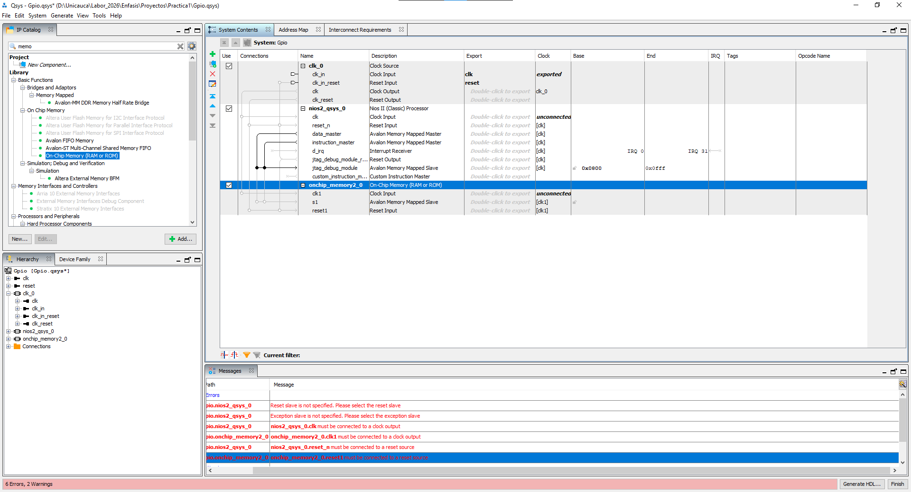
instruction_master y data_master.Clock Source — clk_0
clk_0 genera el reloj del sistema. Conecta así:
clk_0.clk
├────────► micro.clk
└────────► memoria.clk1micro.clk must be connected to a clock output memoria.clk1 must be connected to a clock output
El componente Nios II — micro
El componente micro es el procesador Nios II. Entre sus puertos pueden aparecer
clk, reset_n, data_master, instruction_master,
d_irq, jtag_debug_module, jtag_debug_module_reset y
custom_instruction_master. No todos deben conectarse: Platform Designer
muestra todas las interfaces disponibles, pero solo se usan las que necesita la arquitectura actual.
instruction_master — la interfaz con la que Nios II busca las
instrucciones que va a ejecutar. En esta práctica debe conectarse, porque el procesador necesita leer
su programa desde la memoria:
Nios II │ │ instruction_master ▼ memoria.s1
data_master — permite al procesador leer y escribir datos: variables,
lecturas, escrituras, acceso a periféricos memory-mapped. Es normal que
instruction_master y data_master usen la misma memoria en un sistema
sencillo:
Nios II │ │ data_master ▼ memoria.s1
custom_instruction_master NO se conecta?
Se usa cuando se crean instrucciones personalizadas implementadas en hardware FPGA:
Nios II │ │ custom_instruction_master ▼ Hardware personalizado
d_irq NO se conecta?
Está relacionado con las interrupciones: un periférico puede avisar al procesador mediante una IRQ
(temporizadores, GPIO, botones, UART, sensores, periféricos personalizados):
Timer / GPIO / UART
│
│ IRQ
▼
d_irq
│
▼
Nios II
Tampoco todas las entradas clk_in deben conectarse: una entrada de reloj solo debe
conectarse cuando el componente necesita esa señal y existe una fuente compatible. No se
conecta un puerto de reloj simplemente porque aparezca en la lista — el reloj principal de esta
práctica es clk_0.
| Puerto | ¿Conectar ahora? | Motivo |
|---|---|---|
clk | Sí | Reloj del procesador |
reset_n | Sí | Reset |
instruction_master | Sí | Buscar instrucciones |
data_master | Sí | Leer/escribir datos |
d_irq | No | No hay periférico IRQ todavía |
custom_instruction_master | No | No hay hardware personalizado |
| JTAG | Sistema de depuración | Se usa según el flujo estándar de Nios II |
Regla: no conectar un puerto solo para "eliminar una línea" en la vista. Primero hay que determinar qué función cumple ese puerto en la arquitectura.
Reset
El reset coloca los componentes en un estado inicial conocido:
Reset Source
│
├────────► micro.reset_n
└────────► memoria.reset1
El reset es necesario para que el procesador arranque correctamente. El sufijo _n
normalmente indica que la señal es activa en nivel bajo (activo cuando vale 0, no 1).
Reset slave is not specified. Exception slave is not specified. nios2_qsys_0.clk must be connected to a clock output. nios2_qsys_0.reset_n must be connected to a reset source. onchip_memory_2_0.clk1 must be connected to a clock output. onchip_memory_2_0.reset1 must be connected to a reset source.
nios2_qsys_0 y onchip_memory_2_0 son los nombres de instancia que
Platform Designer asigna por defecto al agregar los componentes desde el IP
Catalog — antes de renombrarlos a micro y memoria, los nombres que usa
el resto de esta guía. "Reset slave is not specified" significa que Platform Designer todavía no
sabe qué señal será el reset; "Exception slave is not specified" significa que todavía no sabe qué
memoria usará Nios II para las excepciones. La solución conceptual es la misma de siempre: conectar
clock y reset desde sus fuentes a ambos componentes.
On-Chip Memory — memoria
La memoria se llamó memoria, con interfaz Avalon Memory-Mapped s1 — por
eso aparece como memoria.s1 en los diagramas anteriores. "On-Chip" significa que usa
recursos internos de la FPGA: no es una memoria externa conectada por pines, sino bloques de memoria
embebidos dentro del mismo chip donde vive Nios II. Puede usarse para instrucciones, variables,
stack, datos y el programa inicial.
| Slave S1 Data width | 32 bits |
| Total memory size | 4096 bytes (4 KB) |
| Read During Write Mode | DONT_CARE |
| Slave S1 Latency (read latency) | 1 ciclo |
| Reset Request | Enabled |
Read During Write Mode define el
comportamiento cuando ocurren una lectura y una escritura en condiciones simultáneas — para esta
práctica se dejó en el valor predeterminado, sin requerir un comportamiento específico. El
read latency indica cuántos ciclos pasan entre una solicitud de lectura y la disponibilidad
del dato. Reset Request: Enabled es la opción de protección/reset del componente de
memoria; se mantuvo la configuración que propone Platform Designer por defecto, sin necesidad de una
política distinta para este sistema mínimo.
La interfaz memoria.s1 es un Avalon Memory-Mapped Slave:
Nios II es el maestro, memoria es el esclavo que responde a sus
solicitudes. Para una lectura:
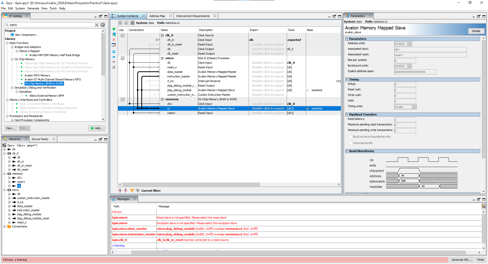
memoria.s1 (Avalon Memory Mapped Slave, read latency 1,
explicit address span 4096) — y, en el panel inferior, el error real de overlap entre
jtag_debug_module y memoria.s1 en el rango 0x800-0xfff.Nios II │ │ READ + ADDRESS ▼ memoria.s1 │ │ READDATA ▼ Nios II
Para una escritura:
Nios II │ │ WRITE + ADDRESS + DATA ▼ memoria.s1
La On-Chip Memory puede además inicializarse con un archivo .hex, para que tenga
contenido inicial ya cuando se genera/programa el sistema:
Programa │ ▼ archivo .hex │ ▼ On-Chip Memory │ ▼ Nios II
Reset Vector — indica dónde empieza a ejecutar Nios II después del reset. En esta
práctica: Reset Vector Memory = memoria.s1, Reset vector offset = 0x00000000.
Reset │ ▼ Nios II │ ▼ Reset Vector │ ▼ memoria.s1 │ ▼ inicio del programa
Por eso la memoria seleccionada como Reset Vector debe estar correctamente conectada y presente en
el Address Map. Lo mismo aplica al Exception Vector (memoria.s1 en esta
práctica, offset = 0x00000020 — no el mismo offset que el Reset
Vector): define dónde está el código que atiende las excepciones del procesador, y también debe
apuntar a una memoria accesible.
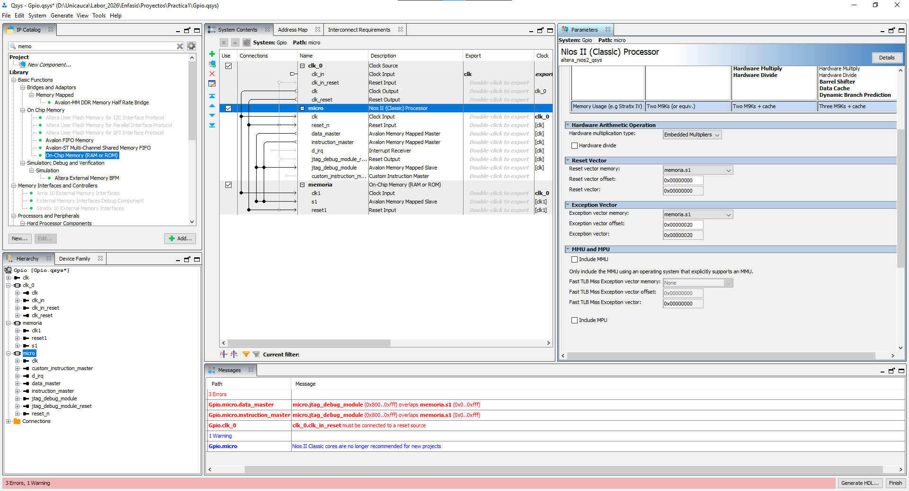
micro: Reset Vector en memoria.s1
(offset 0x00000000) y Exception Vector también en memoria.s1 pero con
offset 0x00000020 — un desplazamiento distinto, para que el código de arranque y el
de manejo de excepciones no ocupen la misma dirección.JTAG Debug Module
Permite que el computador se comunique con Nios II para depuración y para cargar el software — tiene su propio espacio de direcciones dentro del sistema:
PC │ │ JTAG ▼ JTAG Debug Module │ ▼ Nios II
Address Map y errores de solapamiento (overlap)
(captura pendiente: 02_address_map_sin_errores.png) — la pestaña Address
Map asigna rangos de memoria a cada componente, por ejemplo memoria.s1 en
0x00000000-0x00000FFF y el JTAG Debug Module en otro rango más
adelante; los rangos exactos los asigna Platform Designer y no deben superponerse.
micro.data_master: micro.jtag_debug_module (0x800...0xfff) overlaps memoria.s1 micro.instruction_master: micro.jtag_debug_module (0x800...0xfff) overlaps memoria.s1
memoria: 0x0000 - 0x0FFF JTAG: 0x0800 - 0x0FFF
0x0800 y 0x0FFF.
Cuando Nios II accede a una dirección, el sistema necesita saber sin ambigüedad qué componente debe responder:
Nios II │ │ 0x0800 ▼ ¿Memoria? ¿JTAG?
Si dos componentes usan la misma dirección, el mapa es ambiguo y Platform Designer genera un error — los rangos deben quedar separados. La pestaña Address Map permite comprobar los rangos asignados a cada componente; la idea es que cada uno tenga un espacio claramente diferenciado, por ejemplo:
memoria.s1: 0x00000000 - 0x00000FFF JTAG: 0x00010000 - 0x00010FFF
Los valores exactos dependen de la configuración que genere Platform Designer; lo importante es que no haya solapamiento entre rangos.
Checklist antes de Generate HDL
Errores iniciales típicos, todos resueltos siguiendo la estructura de conexión de las secciones anteriores:
Reset slave is not specified. Exception slave is not specified. micro.clk must be connected to a clock output. memoria.clk1 must be connected to a clock output. micro.reset_n must be connected to a reset source. memoria.reset1 must be connected to a reset source.
La estructura necesaria, resumida:
Clock ↓ Nios II + Memory Reset ↓ Nios II + Memory instruction_master ↓ Memory data_master ↓ Memory
- Existe
clk_0. - Existe
micro. - Existe
memoria. micro.clkestá conectado.memoria.clk1está conectado.micro.reset_ntiene una fuente válida.memoria.reset1tiene una fuente válida.instruction_masterestá conectado a la memoria.data_masterestá conectado a la memoria.- Reset Vector está configurado.
- Exception Vector está configurado.
- No existen overlaps en el Address Map.
- Platform Designer muestra
0 Errors(la advertencia de Nios II Classic puede seguir presente — ver abajo).
d_irq → cualquier puerto", "custom_instruction_master →
cualquier puerto" o "clk_in → cualquier reloj". Cada conexión debe tener una función.
La pregunta correcta siempre es: ¿qué función cumple este puerto, y qué componente proporciona
o recibe esa función?
Generate HDL (captura pendiente: 06_generate_hdl.png)
Create HDL design files for synthesis: VHDL — correcto si el proyecto usa VHDL.
Create block symbol file (.bsf) activado — genera un símbolo reutilizable en un diseño
esquemático de Quartus (el .bdf del paso 6). Create simulation model: VHDL
— correcto si se desea generar el modelo de simulación en VHDL.
Directorio de salida usado en esta práctica:
D:\Unicauca\Labor_2026\Enfasis\Proyectos\Practica1\Gpio — mantener los archivos
generados dentro del propio directorio del proyecto facilita su integración posterior con Quartus.
Al presionar Generate, Platform Designer produce los archivos HDL necesarios para
implementar el sistema — por ejemplo Gpio.vhd, Gpio.sopcinfo,
Gpio.qip, más archivos auxiliares (los nombres exactos varían según la versión de
Quartus y la configuración).
0 Errors, 1
Warning — no "0 Errors" a secas: la advertencia de Nios II Classic (ver abajo) se mantiene
presente incluso con el sistema correctamente armado, y no impide avanzar. Un
ERROR impide continuar; un WARNING hay que entenderlo, pero no bloquea la
generación del sistema. 0 Errors significa que Platform Designer pasó las
comprobaciones estructurales principales — no significa todavía que el programa de
Nios II esté ejecutándose, solo que el hardware está suficientemente definido para continuar con la
generación de HDL. Después todavía falta: generar HDL, integrar el sistema en Quartus, compilar,
programar la FPGA, crear/cargar el software Nios II, y ejecutar/probar.
Nios II Classic cores are no longer recommended for new projects.
Es una advertencia, no un error: indica que Nios II Classic ya no es la opción recomendada para
proyectos nuevos (ver la nota de versión en 1.2). Si la práctica requiere
específicamente Nios II Classic, se puede continuar con esa arquitectura sin problema.
Flujo completo y arquitectura final
Crear proyecto Quartus
│
▼
Abrir Platform Designer
│
▼
Agregar Clock Source
│
▼
Agregar Nios II
│
▼
Agregar On-Chip Memory
│
▼
Conectar Clock
│
▼
Configurar Reset
│
▼
Conectar instruction_master
│
▼
Conectar data_master
│
▼
Configurar Reset Vector
│
▼
Configurar Exception Vector
│
▼
Revisar Address Map
│
▼
Eliminar overlaps
│
▼
Comprobar 0 Errors
│
▼
Generate HDL
│
▼
Integrar en Quartus
│
▼
Compilar FPGA
│
▼
Programar FPGA
│
▼
Crear/cargar software Nios II
│
▼
Probar clk_0
│
┌────────┴────────┐
│ │
▼ ▼
micro.clk memoria.clk1
RESET
│
┌────────┴────────┐
│ │
▼ ▼
micro.reset_n memoria.reset1
Nios II / micro
┌───────────────────┐
│ │
│ instruction_master├─────────┐
│ │ │
│ data_master ├─────┐ │
│ │ │ │
└───────────────────┘ │ │
▼ ▼
┌─────────────┐
│ memoria.s1 │
└─────────────┘
instruction_master y data_master de Nios II convergen en la misma
memoria.
Nios II usa interfaces Avalon para comunicarse con los demás componentes — en este
sistema, Avalon-MM Instruction Master y Avalon-MM Data Master (ver
1.1). El bus permite operaciones de dirección, lectura, escritura, datos,
byte enable y selección del dispositivo; la memoria on-chip funciona como esclavo Avalon
Memory-Mapped:
Nios II │ │ Avalon-MM ▼ memoria.s1
Hardware y software: dos etapas separadas
Hasta "0 Errors" y Generate, todo lo anterior es configuración de hardware en Platform Designer:
Nios II Clock Reset Memory Avalon JTAG Address Map
Después de eso empieza el software: el programa que va a ejecutar Nios II — ver 1.3 para compilación cruzada y JTAG UART.
int main()
{
/* programa para Nios II */
return 0;
}Primero se debe terminar correctamente el hardware — recién ahí tiene sentido pasar al software.
Descargar el programa a la FPGA: Nios II EDS y la JTAG UART
Con el hardware generado (Generate HDL) e integrado, compilado y programado en la FPGA
(ver 1.2), falta el último tramo: crear el software en C, bajarlo a la
memoria del sistema y ver su salida. Todo este tramo usa el mismo cable USB-Blaster con el que ya se
programó la FPGA — no se necesita ningún cable adicional.
PC (Nios II EDS) │ │ USB-Blaster / JTAG ▼ JTAG Debug Module ──── descarga el .elf a memoria (Reset Vector) │ ▼ Nios II ejecuta el programa │ │ printf() → HAL del BSP ▼ JTAG UART ──── mismo cable JTAG, canal serie │ ▼ Terminal Nios II en el PC (stdout)
stdout por la JTAG UART.-
Crear el proyecto de aplicación y BSP desde plantilla. En Nios II EDS:
File → New → Nios II Application and BSP from Template, apuntando al
.sopcinfogenerado por Platform Designer, y eligiendo la plantilla Hello World. El BSP se genera automáticamente a partir de ese.sopcinfo— expone exactamente los periféricos y direcciones del sistema que se armó (ver 1.3).#include <stdio.h> int main(void) { printf("Hello from Nios II!\n"); return 0; } -
Build Project. Compila el BSP y la aplicación con el compilador cruzado
nios2-elf-gcc(ver 1.3) — genera el ejecutable.elfpara la arquitectura Nios II, no para la máquina host. -
Run As → Nios II Hardware. Descarga el
.elfa la memoria on-chip del sistema (la mismamemoria.s1ensamblada arriba, en la dirección del Reset Vector) a través del cable USB-Blaster, y lo ejecuta. -
Leer la salida. El mensaje aparece en la consola Nios II del IDE — equivalente a
correr
nios2-terminaldesde la Nios II Command Shell.printfen C se enruta, vía el HAL del BSP, a la JTAG UART comostdout.
- No hay salida en la terminal Nios II: casi siempre el reloj o el reset del sistema no quedaron conectados en el top-level, o se conectaron con la polaridad invertida (revisar la sección Reset arriba — un botón activo en bajo conectado como si fuera activo en alto no resetea nunca el sistema).
- Error "System ID mismatch" al ejecutar: el
.sofprogramado en la FPGA no corresponde al.sopcinfousado para generar el BSP — se modificó el sistema en Platform Designer sin recompilar y reprogramar el proyecto de Quartus. Se corrige recompilando y reprogramando la FPGA antes de volver a ejecutar el software. - Tiempo de espera agotado al programar: el cable USB-Blaster no está bien conectado, o la tarjeta no tiene alimentación — revisar la conexión física antes de sospechar del proyecto.
- Clock configurado
- Reset configurado
- Nios II configurado
- On-Chip Memory configurada
instruction_masterconectadodata_masterconectado- Reset Vector configurado
- Exception Vector configurado
- Address Map sin overlaps
- 0 Errors
- Generate HDL ejecutado
custom_instruction_master y d_irq pueden permanecer sin conexión:
pertenecen a funcionalidades (instrucciones personalizadas, interrupciones) que esta práctica todavía
no usa.
CLOCK │ ▼ Nios II │ ├──── instruction_master ────► Memory │ └──── data_master ───────────► Memory RESET │ ├────► Nios II └────► Memory JTAG │ └────► Debug Nios II
custom_instruction_master y d_irq no se conectan en esta etapa porque
todavía no existen hardware personalizado ni periféricos que generen interrupciones. El indicador
principal antes de generar HDL es 0 Errors y un Address Map sin solapamientos. Después de
eso se presiona Generate y se continúa con la integración del sistema en Quartus — ver
1.2 y 1.3 para el resto del flujo.
JTAG UART, sistema completo, Pin Planner y programación (paso 12 a 16)
Esta tercera parte retoma justo donde quedó el ensamblado del
sistema: el mismo proyecto Gpio, sobre el mismo Cyclone V
5CSEBA6U23I7 ya identificado arriba. Cinco capturas reales adicionales
(img/paso12.png a img/paso16.png) documentan la ventana de configuración
del IP JTAG UART, el sistema ya sin errores en Platform Designer, la compilación en Quartus, la
asignación de pines físicos en el Pin Planner y, por último, la programación de la FPGA — donde,
además del dispositivo Cyclone V, aparece en la misma cadena JTAG el SOCVHPS, el
Hard Processor System del SoC.
Cyclone V SoC (5CSEBA6U23I7)
│
┌───────────────┴───────────────┐
│ │
HPS FPGA
ARM Cortex-A9 Lógica programable
(SOCVHPS) │
┌─────────────┼─────────────┐
│ │ │
Nios II JTAG UART (memoria)
(micro) (jtag_uart_0) (memoria.s1)
SOCVHPS) y la FPGA
(donde vive el Nios II soft-core, micro) son dos sistemas de procesamiento distintos
dentro del mismo chip. Esta práctica solo programa la FPGA; el HPS no se usa todavía.Configurar el IP JTAG UART — paso 12
Antes de llegar al sistema sin errores del paso siguiente, hay que configurar el IP
jtag_uart_0 (altera_avalon_jtag_uart) que se agregó al proyecto.
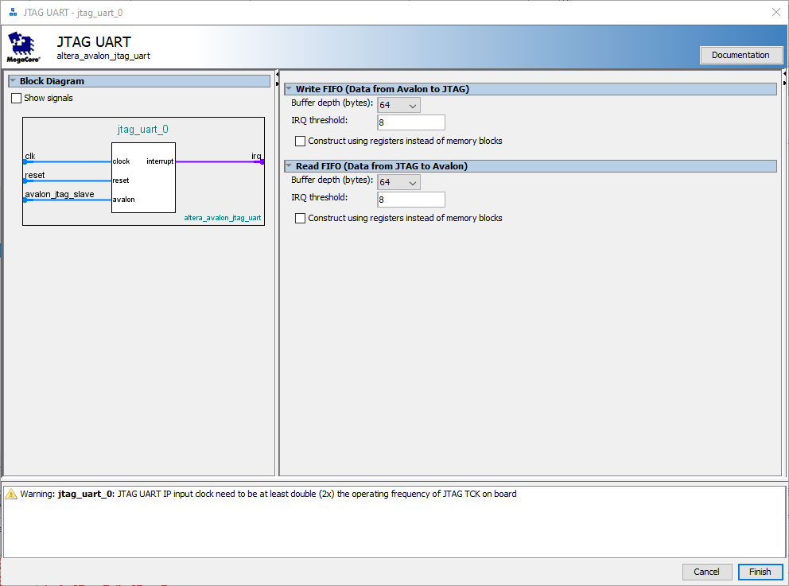
jtag_uart_0: Write FIFO y Read FIFO, cada uno con
64 bytes de profundidad y umbral de IRQ en 8.
Los dos FIFO tienen sentidos opuestos: el Write FIFO lleva datos de Avalon hacia
JTAG — es la ruta que sigue un printf() del programa en Nios II hasta la terminal del
PC — y el Read FIFO lleva datos de JTAG hacia Avalon, para cuando el programa lee
algo que el usuario escribió en la terminal. El IRQ threshold no es una dirección de
memoria: es un parámetro interno que determina cuándo el FIFO genera una interrupción por
ocupación. La advertencia de frecuencia (el reloj de jtag_uart_0 debe ser al menos el
doble del TCK de la placa) es informativa, no un error de conexión.
El sistema ya resuelto en Platform Designer — paso 13
![Pestaña System Contents de Qsys para el proyecto Gpio.gsys: clk_0 (Clock Source, exportado como clk_0), micro (Nios II Classic Processor) con data_master e instruction_master conectados y d_irq/custom_instruction_master sin exportar, memoria (On-Chip Memory RAM or ROM) y jtag_uart_0 (JTAG UART) con avalon_jtag_slave e irq conectado a IRQ 0 de micro. Columnas Base/End muestran jtag_uart_0 en 0x0000_0000-0x0000_0007, memoria en 0x0001_0000-0x0001_ffff y jtag_debug_module en 0x0002_0800-0x0002_0fff. Panel Messages: 1 Warning (Nios II Classic cores are no longer recommended for new projects) y 1 Info Message sobre la frecuencia del reloj del JTAG UART — 0 errores.](img/paso13.png)
Gpio completo: el overlap de direcciones del paso anterior quedó
resuelto — 0 errores, solo la advertencia esperada por usar un núcleo Nios II Classic.
Esta captura es del mismo proyecto Gpio.qsys, después de resolver el error de
solapamiento visto en el paso de micro. El mapa de
direcciones final queda con jtag_uart_0 en las direcciones más bajas
(0x0000_0000–0x0000_0007), memoria ocupando 64 KB desde
0x0001_0000, y jtag_debug_module — el módulo que usa el IDE para descargar
y depurar el programa por JTAG, no un periférico que el programa use directamente — en
0x0002_0800. El panel Messages ya no muestra errores: solo la advertencia de
que Nios II Classic no se recomienda para proyectos nuevos (Intel recomienda el núcleo
Nios II Gen2 para diseños actuales) y el aviso informativo sobre la frecuencia del reloj
del JTAG UART visto en el paso anterior.
Integrar y compilar en Quartus — paso 14
![Quartus Prime Lite Edition con Principal.bdf abierto: bloque Gpio (el sistema generado por Platform Designer) instanciado como inst1, con un pin de entrada conectado a su puerto clk_clk. El panel Tasks muestra Compile Design con Analysis & Synthesis, Fitter (Place & Route), Assembler y TimeQuest Timing Analysis completados (marcas verdes). El panel de mensajes muestra worst-case setup/hold/recovery/removal/minimum pulse width slack, Design is not fully constrained for setup and hold requirements, y Quartus Prime Full Compilation was successful, 0 errors, 27 warnings.](img/paso14.png)
inst1
dentro de Principal.bdf, compila con 0 errores.
El diseño de nivel superior real de este proyecto es Principal.bdf, con el bloque
Gpio generado por Platform Designer instanciado dentro (inst1) y su reloj
conectado a un pin externo. La compilación pasa por las mismas cuatro etapas de siempre —
Analysis & Synthesis, Fitter, Assembler,
TimeQuest Timing Analyzer — y termina en 0 errors, 27 warnings. Los mensajes
de slack (margen temporal disponible en cada esquina de timing) y el aviso
Design is not fully constrained son normales en un proyecto sin archivo de
restricciones (.sdc) dedicado: indican que faltan restricciones de timing más finas,
no que el diseño esté mal. El indicador que importa antes de programar la FPGA es
0 errors.
Pin Planner: asignar los pines físicos — paso 15
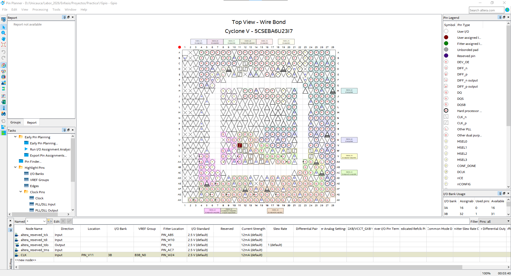
CLK asignada al pin físico
PIN_V11, en el banco de E/S 3B del Cyclone V 5CSEBA6U23I7.
Platform Designer define la arquitectura lógica (qué se conecta con qué dentro del
chip); el Pin Planner define la ubicación física (a qué pin del encapsulado sale
cada señal). En la captura, la señal CLK queda asignada al pin PIN_V11,
como entrada, dentro del banco de E/S 3B, con estándar eléctrico
2.5 V por defecto. Una conexión lógica correcta en Platform Designer no sirve de
nada si el pin físico no coincide con el que la placa realmente tiene cableado al reloj — por eso
este paso es tan necesario como el ensamblado del sistema.
Programmer: cargar el bitstream y aparece el SOCVHPS — paso 16
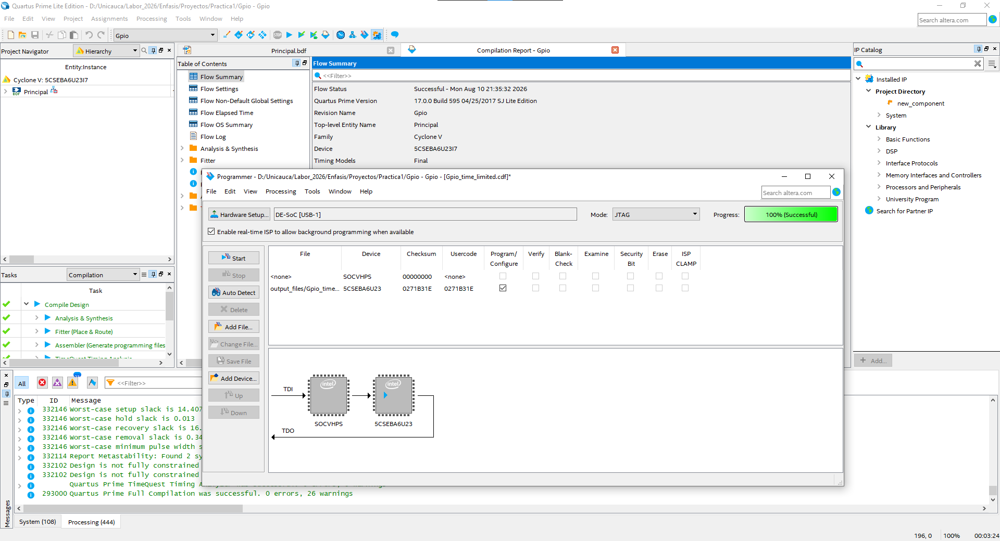
sin casillas marcadas; la fila output_files/Gpio_time...cdf apunta al dispositivo 5CSEBA6U23 con checksum y usercode 0271B31E coincidentes y la casilla Program/Configure marcada. Progress: 100% (Successful). El log inferior muestra Quartus Prime Full Compilation was successful, 0 errors, 26 warnings.">Progress: 100% (Successful).
Hardware Setup: DE-SoC [USB-1] confirma que Quartus detectó el cable USB-Blaster; con
Mode: JTAG, la programación viaja por la cadena de depuración estándar (TDI hacia el
chip, TDO de vuelta). Esa cadena, en un Cyclone V SoC, siempre expone dos
dispositivos: SOCVHPS (el HPS, ARM Cortex-A9) y 5CSEBA6U23 (la FPGA). Solo
la fila de 5CSEBA6U23 tiene la casilla Program/Configure marcada — el archivo
generado (output_files/Gpio_time....cdf) configura la lógica FPGA, no el HPS; por eso
la fila SOCVHPS queda con checksum y usercode en
<none>. Progress: 100% (Successful) confirma que la cadena JTAG
respondió y que la configuración terminó sin errores.
SOCVHPS no es lo mismo que usar el HPS
Que SOCVHPS aparezca en la cadena JTAG es una propiedad física del chip Cyclone V SoC —
aparece siempre, se use o no el HPS — y no significa que se haya cargado ningún software en el ARM
Cortex-A9. En esta práctica solo se programó la FPGA (5CSEBA6U23): el Nios II
(micro) es un procesador soft-core, implementado con la lógica programable de la
FPGA, mientras que el HPS es hardware físico fijo del SoC, independiente de lo que se sintetice en la
FPGA.
HPS Nios II
└── ARM Cortex-A9 └── procesador soft-core
└── hardware físico fijo └── implementado dentro de la FPGA
del SoC (SOCVHPS)| Paso | Imagen | Tema | Resultado |
|---|---|---|---|
| 12 | paso12.png | Configuración del IP JTAG UART | Write/Read FIFO, IRQ threshold y advertencia de reloj |
| 13 | paso13.png | Platform Designer, sistema completo | 0 Errors, 1 Warning — mapa de direcciones final |
| 14 | paso14.png | Quartus, compilación | 0 errors, 27 warnings — diseño verificado |
| 15 | paso15.png | Pin Planner | CLK asignado a PIN_V11, banco 3B |
| 16 | paso16.png | Programmer | FPGA programada; SOCVHPS visible en la cadena JTAG |